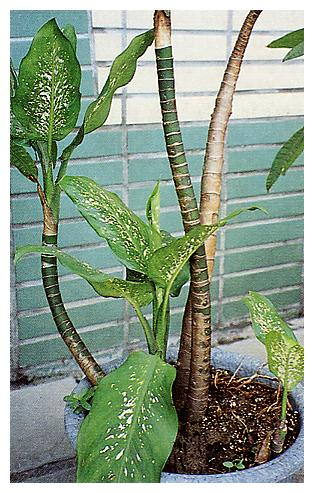
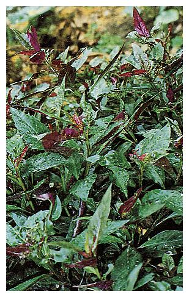

| 編號 | 照片 | 名稱 |
| 01 |  |
春不老 |
| Ardisia squamulosa Presl | ||
| 春不老 Myrsinaceae | ||
| 介紹 | 常綠灌木，葉互生，革質，橢圓形或披針形，開淡紫色小花，果為漿果，扁球形，熟時黑紫色，新枝及嫩葉淡紅色，常種在庭園中做為綠籬，以種子或阡插繁殖。 | |
| 編號 | 照片 | 名稱 |
| 02 |  |
鬼針草、咸豐草、蝦公鋏 |
| Bidens pilosa L. | ||
| 菊科 Compositae | ||
| 介紹 | 莖直立，方形，上端有疏毛，高25~90cm。中層莖葉對生，三出葉或羽狀全裂；上下表面有疏毛；上層莖葉對生或互生，三出葉或線狀披針形。頭狀花無舌片，徑8~9mm；總苞7或8匙形，外苞片長橢形，內苞片披針形，管狀花五裂。瘦果線形，4稜，有短毛，52~70，冠毛3或4。 鬼針草原產北美，現已歸化台灣，分佈在低海拔，全島遍地均有生長，藉其瘦果上的短毛，附著在人畜之衣服皮毛上而可傳播。未成熟之果穗小孩子常用來互射，看誰射在對方衣服上的果穗多。 鬼針草嫩莖葉可食，洗淨以滾熱之水燙過（短時間約一至二分鐘）炒食或加調味料食用。老莖葉洗淨煮水為夏日清涼飲料，消暑退火，嫩莖葉可供做藥用，與清水熬煮喝其汁液可消炎，利尿，解熱，治盲腸炎，肝病，糖尿病等，搗碎敷在癰疽，創傷患處可消腫退癀，拔膿生肌。 | |
| 編號 | 照片 | 名稱 |
| 03 |  |
澳洲鴨腳木 |
| Brassaia actinophylla | ||
| 五加科 Araliaceae | ||
| 介紹 | 常綠喬木高可達30m，盆栽約1～2m。掌狀複葉小葉3～16枚，長橢圓形，疏鋸齒，葉端突尖，革質，葉面光滑明亮，對光線適應性強。以播種或阡插繁殖，性喜高溫多濕。 | |
| 編號 | 照片 | 名稱 |
| 04 | 茼蒿、蓬蒿 | |
| Chrysanthemum coronarium L. | ||
| 菊科 Compositae | ||
| 介紹 | 一年生草本，葉互生，葉緣有疏齒裂。頭狀花小形或中形，花冠的顏色，管狀花為淺黃色，舌狀花為深黃色，春末夏初開花。 茼蒿為香料類蔬菜與湯圓一起煮味美，也可做為蔬菜單獨煮食，因煮後體積縮小很多，故有人稱為打妻菜（Phah-bo-chhai）意指太太在煮菜過程中偷吃，才會把菜煮得變少，故而責備她甚至打她。 茼蒿以種子繁殖，秋末播種。 | |
| 編號 | 照片 | 名稱 |
| 05 | 蘄艾、芙蓉菊、芙蓉、海芙蓉、年年艾 | |
| Crossostephium chinense(L.) Makino | ||
| 菊科 Compositae | ||
| 介紹 | 多年生常綠亞灌木，分枝甚多，平展，密被灰色柔毛；葉狹匙形至倒卵狀倒披針形，長2～5cm，寬0.2～2cm，全緣或先端三裂，偶有3～5羽裂，鈍頭，表面被白色柔毛。秋末冬初開花，頭狀花序頂生，半球形，淡黃色，徑約3～7mm，密生絨毛，中央為兩性花，周圍有一列雌花，兩種花均呈管狀；瘦果長橢圓形，有五稜，冠毛短，繁殖可用分株法。 根葉或全草可入藥，具行血袪風，逐濕除痛，消腫解毒，止痰鎮咳，去瘀療傷功效，主治風濕性骨節痛，長年頭風，月內風，風寒感冒，百日咳，氣管炎，乳腺炎，疔瘡腫毒，下消腎虛，胃痛，小兒胎毒，兒 童發育不良，跌打內外傷等。外用主治跌打內外傷，皮膚炎，淋病等。本品不宜單味長久服用，可加排骨，土雞，豬腳燉煮。 | |
| 編號 | 照片 | 名稱 |
| 06 | 南瓜、金瓜、番瓜 | |
| Curcurbita moschata(Duch) Poir. var.toons Makino. | ||
| 葫蘆科 Cucurbitaceae | ||
| 介紹 | 一年生或宿根性蔓性草本莖葉上密生毛茸，莖做橫臥或攀緣狀。葉心形，全緣或淺裂，卷鬚為2或更多裂。雌雄同株，單性花，花大輪，色黃，萼片4～7；花冠為鐘形五中裂。雄花有雄蕊3，雌花之花柱短，柱頭3～5。果實大型，形狀與色彩因品種而各不同，果實肉質含澱粉多。常吃南瓜可治糖尿病，南瓜子可防攝護腺炎。 | |
| 編號 | 照片 | 名稱 |
| 07 |  | 大王黛粉葉、啞蕉、廣東萬年青 |
| Dieffenbachia amoena | ||
| 天南星科 Araceae | ||
| 介紹 | 多年生草本，莖直立粗壯節間短。葉長橢圓形至披針形，先端銳形，略呈波狀緣，葉面散佈各種乳白或乳黃色斑紋或斑點。葉柄基部呈鞘狀，佛燄苞綠色，佛燄花序上部為雄花，下部為雌花。 黛粉葉之汁液有毒，性喜溫濕環境，可用阡插繁殖。 | |
| 編號 | 照片 | 名稱 |
| 08 | 革質黛粉葉、大發財樹 | |
| Dieffenbachia daguensis | ||
| 天南星科 Araceae | ||
| 介紹 | 革葉黛粉葉，耐陰性強，葉片肥厚碩大近革質，濃綠富光澤，盆栽作室內擺飾，早晚葉緣常凝聚許多水珠，象徵錢水滾滾，被視為吉祥植物。 | |
| 編號 | 照片 | 名稱 |
| 09 |  |
佛州星點木 |
| Dracaena godseffianacv. 'Florida Beauty' | ||
| 龍舌蘭科 Agavaceae | ||
| 介紹 | 常綠灌木，株高可達一公尺。葉對生或三葉輪生，橢圓狀披針形或長卵形，葉革質，葉面有許多乳黃色或乳白色小斑點，如繁星點點故名星點木；佛州星點木葉片乳黃色斑點大且密集，成株夏天開花，總狀花序，小花長筒狀，果為紅色漿果。 星點木，耐旱耐陰，可用播種，阡插或分株法繁殖，以阡插為主，春、秋季為阡插適期，以帶葉之枝條或莖頂，每段2～3節，葉片剪半，插於濕潤沙床，約一個月發根，栽培處須排水良好。 | |
| 編號 | 照片 | 名稱 |
| 10 | 醴腸、蓮子草、墨菜、旱蓮草 | |
| Eclipta prostrata L. | ||
| 菊科 Compositae | ||
| 介紹 | 一年生匍匐性草本或傾伏性且多分歧之莖，全株粗糙，有毛高約15～60cm，葉對生，頭狀花白色，中央部分淺綠，舌狀花在外，兩列，管狀花多數在內，果為黑色瘦果，無冠毛，常長在水溝邊或田邊。 嫩莖葉可炒食，能補腎，止血痢，固牙齒，常吃可使頭髮黑烏。 | |
| 編號 | 照片 | 名稱 |
| 11 |  | 紅鳳菜、紅菜、腳目菜、紫背天葵 |
| Gynura bicolor (Willd.) DC. | ||
| 菊科 Compositae | ||
| 介紹 | 多年生草本，莖深紅紫色，全株柔軟肉質。莖葉光滑，有少數分枝。葉互生，上表面綠色，下表面及葉柄紅紫色，葉片倒卵形至倒披針形，長5～10cm，先端銳利，邊緣有不規則鋸齒，中肋顯著，帶紅色，側脈7至10對，不對稱。春或秋天開花，頭狀花序，有長梗，花菊黃色，瘦果圓筒狀，有冠毛。 嫩莖葉可做蔬菜，莖葉可入藥，具清熱解毒，涼血止血功用。主治咳血、血熱吐血、血崩、貧血、支氣管炎、中暑愛睏、阿米巴痢疾、經痛、高血壓。外用治刀傷出血，疔瘡傷口潰瘍久不收口等。 | |
| 編號 | 照片 | 名稱 |
| 12 | 瓠子、瓢瓜 | |
| Lagenaria siceraria(Mol.) Standl | ||
| 葫蘆科 Cucurbitaceae | ||
| 介紹 | 一年生蔓性草本，蔓粗大可達20m以上，藉莖卷鬚攀緣他物而上昇，莖葉上有毛茸。根為淺根性，葉互生，有柄，心臟形或腎臟形，或掌狀淺裂，葉寬20～30cm，長20～25cm，花雌雄同株，腋生，色白，夜間開花，花冠五裂，果實圓筒形或洋梨形，果皮上生白色細毛茸。嫩果實供做蔬果食用，老熟果實除去裏面之種子及果肉可做容器盛水用。 | |
| 編號 | 照片 | 名稱 |
| 13 |  |
絲瓜、布瓜、天羅、水瓜 |
| Luffa cylindrica (L.)Roem | ||
| 瓜科 Cucurbitaceae | ||
| 介紹 | 一年生攀緣性草本，莖細長，表面粗糙，藉莖卷鬚纏繞於他物而攀爬，卷鬚稍被毛，二至四叉，葉互生，掌狀分裂，裂片尖銳，長約15～25cm，寬約12～22cm；春末至中秋開花，雌雄同株，單性花，雄花為總狀花序生於總花梗頂端，每日清晨開一朵，傍晚即凋落，雄蕊五枚，雌花花萼裂片卵狀披針形，有長梗，子房下位，柱頭三，膨大，雄、雌花均鮮黃色，果為瓠果長圓筒形，內藏多數種子。 絲瓜之根可治鼻炎，蔓莖可治鼻炎，支氣管炎，咳嗽，月經不調，四肢麻木，葉治咳嗽，百日咳，種子治咳嗽痰多，便秘，瓜絡治乳汁不通，乳腺炎，花治咽喉炎，咳嗽。 | |
| 編號 | 照片 | 名稱 |
| 14 |  |
台灣華山松、五葉松 |
| Pinus armandii Fr.var. masteriana Hay. | ||
| 松科 Pinaceae | ||
| 介紹 | 常綠大喬木，葉五針一束，長5～10公分，葉鞘早落，球果卵圓形，長5～10公分，果鱗前端不反捲，種子無翅，可食。 華山松樹幹直，木材供建築，造紙，火柴梗等用途。 | |
| 編號 | 照片 | 名稱 |
| 15 |  |
隼人瓜、梨瓜、佛手瓜 |
| Sechium edule(Jacq.) Swartz | ||
| 葫蘆科 Cucurbitaceae | ||
| 介紹 | 多年生蔓性攀緣莖，生有疏毛，通常卷鬚大型，2～5分歧，葉對生，花小，雌雄同株，雄蕊1～2個雄花呈小房狀，皆為腋生。花萼皿狀五裂，花冠杯狀五深裂，裂片卵狀披針形。果實多肉，洋梨形或球形，表面有五裂溝。 果及塊根含澱粉可食用，老莖為優良纖維可加工利用。 | |
| 編號 | 照片 | 名稱 |
| 16 |  |
大岩桐 |
| Sinningia Speciosa（Lodd.）Banth.ettlook. | ||
| 苦苣苔科 Gesneriaceae | ||
| 介紹 | 多年生草木，高約30cm，葉叢生基部，葉及花梗均為肉質，柔軟多汁，有絨毛。葉長橢圓形，花梗自莖基抽出，花冠筒狀，5～8裂，有紅、紫、白等色，又分單瓣及重瓣兩類，果為蒴果，種子細小，春天至秋天開花。繁殖可用種子也可以用葉片扦插。 | |